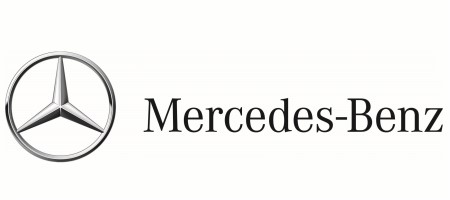

홈 > 브랜드 매거진 > 메르세데스-벤츠
메르세데스-벤츠
메르세데스-벤츠(Mercedes-Benz)는 독일 슈투트가르트에 본사를 둔 프리미엄 자동차 브랜드이다.
산업 분야 모빌리티 · 공개 등급 자료 기반 · 브랜드 평가 4.3 ★


한눈에 보는 브랜드
메르세데스-벤츠는 1886년 칼 벤츠가 세계 최초의 가솔린 내연기관 자동차 '페이턴트 모터바겐'을 특허 출원하며 출발한 독일 프리미엄 자동차 브랜드다. 1926년 벤츠 운트 치에와 다임러 모토렌의 합병으로 다임러-벤츠가 탄생했고, 이후 모든 차에 메르세데스-벤츠 이름을 붙였다.
육·해·공 정복을 상징하는 세 꼭짓점 별 엠블럼으로 유명하며, 2024년 한 해 약 239만 대를 판매한 글로벌 럭셔리 자동차의 기준점이다.
브랜드 관점
핵심은 경쟁 구도 속 포지셔닝이다. BMW가 운전 재미(주행 성능), 아우디가 기술·디자인을 내세운다면, 벤츠는 정숙성과 완성도를 앞세운 '럭셔리의 정점'을 지향한다.
창업 정신은 '최상이 아니면 만들지 않는다'로 요약되며, 플래그십 S클래스가 그 상징이다. 전동화에서는 한때 EQ를 별도 전기차 브랜드로 분리했으나, BMW가 2025년 전기차를 2.5배 이상 판매하며 격차를 벌리자 EQ를 독립 브랜드에서 거둬들이고 내연·전기 라인을 통합하는 유연 전략으로 재조정했다.
한국은 특히 의미가 큰 시장이다. 1987년 첫 수입 이래 S클래스 국내 누적 판매 10만 대를 넘겼고, 한국이 S클래스의 세계 최대급 시장으로 꼽힐 만큼 플래그십 충성도가 높다.
시작과 성장
기원은 두 갈래다. 1886년 칼 벤츠는 만하임에서 세 바퀴 '페이턴트 모터바겐'을 특허 출원했고, 같은 해 고틀리프 다임러와 빌헬름 마이바흐는 슈투트가르트에서 네 바퀴 마차형 자동차를 선보였다.
두 회사는 1924년 상호이익협정을 맺은 뒤 1926년 6월 28일 다임러-벤츠로 정식 합병했다. '메르세데스'라는 이름은 다임러 차의 주요 고객이자 딜러였던 오스트리아 사업가 에밀 옐리네크가 1902년 자기 딸 메르세데스 옐리네크의 이름을 따 상표로 등록한 데서 비롯됐다.
옐리네크는 훗날 자기 성을 옐리네크-메르세데스로 바꾸기까지 했다. 별 엠블럼은 다임러 가문이 쓰던 세 꼭짓점 별과 벤츠의 월계관을 결합해 만들어졌고, 이후 합병 브랜드의 상징으로 자리 잡으며 글로벌 프리미엄 시장을 개척했다.
브랜드 아이덴티티
가치관의 뿌리는 창업자 칼 벤츠의 장인정신과 '최상이 아니면 만들지 않는다'는 신조다. 엠블럼인 세 꼭짓점 별은 육지·바다·하늘 모든 영역에서의 동력 지배를 상징하며, 1900년 세상을 떠난 고틀리프 다임러의 아들 파울과 아돌프가 채택했다.
타깃은 부와 사회적 지위를 갖춘 성공한 중장년 리더층과 럭셔리 지향 소비자다. 브랜드 보이스는 절제되고 권위 있되 따뜻한 환대를 담아, 안전·정숙·완성도를 통해 '최고를 누릴 자격'을 조용히 증명하는 어조를 유지한다.
제품과 서비스
라인업은 세단 C·E·S클래스를 중심으로, SUV는 진입형 GLA부터 GLC·GLE·대형 GLS까지 폭넓다. 전기차는 EQE·EQS 등 EQ 계열을 두며 내연 라인과 통합하는 방향으로 재편 중이다.
고성능은 AMG, 초호화 의전은 마이바흐가 담당한다. 가격대는 C클래스가 수천만 원대부터, S클래스는 1억 원대 후반, 마이바흐 S클래스는 수억 원대에 이른다.
채널은 공식 딜러 전시장과 서비스망, 온라인 견적·사전계약을 함께 운영한다.
사람들
창업자: 카를 벤츠와 고틀리프 다임러(Carl Benz & Gottlieb Daimler)의 회사가 1926년 합병해 출범했다. 소유: 독립 상장사(메르세데스-벤츠 그룹 AG, 2022년 다임러 AG에서 사명 변경).
현재 상태
모회사는 메르세데스-벤츠그룹(옛 다임러)이며 본사는 독일 슈투트가르트에 있다. 이사회 의장(CEO)은 올라 칼레니우스다.
2024년 승용·밴 합산 약 239만 대를 판매했고, 그룹 매출은 약 1,456억 유로(2023년 약 1,524억 유로)로 전년 대비 4.5% 감소했다. 같은 해 영업이익(EBIT)은 약 136억 유로로 중국 부진과 가격 압박의 영향을 받았다.
한국 법인은 메르세데스-벤츠 코리아이며, 2024년 국내 S클래스 판매는 4,679대였다.
타임라인
BI/CI 변천사
함께 읽을 브랜드
 모빌리티 · 편집 검수아우디
모빌리티 · 편집 검수아우디아우디(Audi)는 독일 잉골슈타트에 본사를 둔 폭스바겐 그룹 산하 프리미엄 자동차 제조사이다.
BMW는 이동수단을 만드는 회사를 넘어, 주행 감각과 조형 언어를 함께 설계하는 디자인 브랜드다. BMW의 강점은 성능 수치만으로 설명되지 않는다. 운전자가 차를 보...
 모빌리티 · 자료 기반제네시스
모빌리티 · 자료 기반제네시스제네시스(Genesis)는 현대자동차그룹이 2015년 출범시킨 럭셔리 자동차 브랜드다.
 모빌리티 · 편집 검수볼보
모빌리티 · 편집 검수볼보볼보(Volvo)는 1927년 스웨덴 예테보리에서 출발한 자동차 브랜드로, 승용차(볼보 자동차)와 상용차(볼보 그룹)로 분리돼 있다.
 모빌리티 · 자료 기반현대자동차
모빌리티 · 자료 기반현대자동차현대자동차(Hyundai Motor)는 한국을 대표하는 자동차 기업으로, 인터브랜드 2025 베스트 코리아 브랜드 2위(브랜드 가치 약 27.9조 원)에 올랐다.
 모빌리티 · 매거진 완성할리데이비슨
모빌리티 · 매거진 완성할리데이비슨할리데이비슨은 모터사이클보다 자유와 소속감의 의식을 더 강하게 판매한다. 제품은 이동수단이지만 브랜드의 핵심은 엔진음, 라이딩 문화, 커뮤니티, 반항적 이미지가 결합...
 모빌리티 · 자료 기반기아
모빌리티 · 자료 기반기아기아(Kia)는 한국의 자동차 기업으로, 인터브랜드 2025 베스트 코리아 브랜드 3위(브랜드 가치 약 9.8조 원)에 올랐다.
 모빌리티 · 편집 검수두카티
모빌리티 · 편집 검수두카티두카티(Ducati)는 이탈리아 볼로냐에 본사를 둔 고성능 오토바이 제조 브랜드이다.